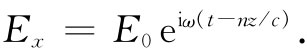
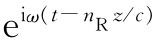
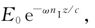
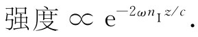
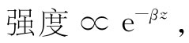

现在要来考察上述结果，即式（32.33）。首先，我们注意到α是一复数，因而折射率n也必将是一复数。这意味着什么呢？现在让我们试将n写成实部与虚部之和：
n=nR -inI ， （32.35）
其中nR 和nI 都是ω的实数函数。我们在inI 之前写上一负号，因此在所有普通光学材料中nI 将是一正值（在普通非活动性材料——不像激光器或光源本身那样的材料——中γ是正数，而使得n的虚部为负）。式（32.21）所表示的平面波可以用n写出，为

将n写成像式（32.35）中的那样，则有
项 表示以速率c/nR 传播的波，因而nR 就代表我们正常所认为的折射率。但这个波的振幅 为

它随z指数式地减弱。对于nI ≈nR /（2π）的情况，在某一时刻，电场强度作为z的函数曲线如图32-1所示。至于折射率的虚部则表示由于在原子振子中的能量损耗而引起的波的衰减。波的强度 与波幅的平方成正比，因而

这往往被写成

其中β=2ωnI /c称为吸收系数 。这样在式（32.33）中我们就不仅得到了材料的折射率理论，而且同样也有了材料吸收光的理论。
图32-1 在某一时刻t，Ex （z）曲线，设nI ≈nR /（2π）
在通常我们认为是透明的材料中，量c/（ωnI ）——具有长度量纲——比起该材料的厚度来是很大的量。